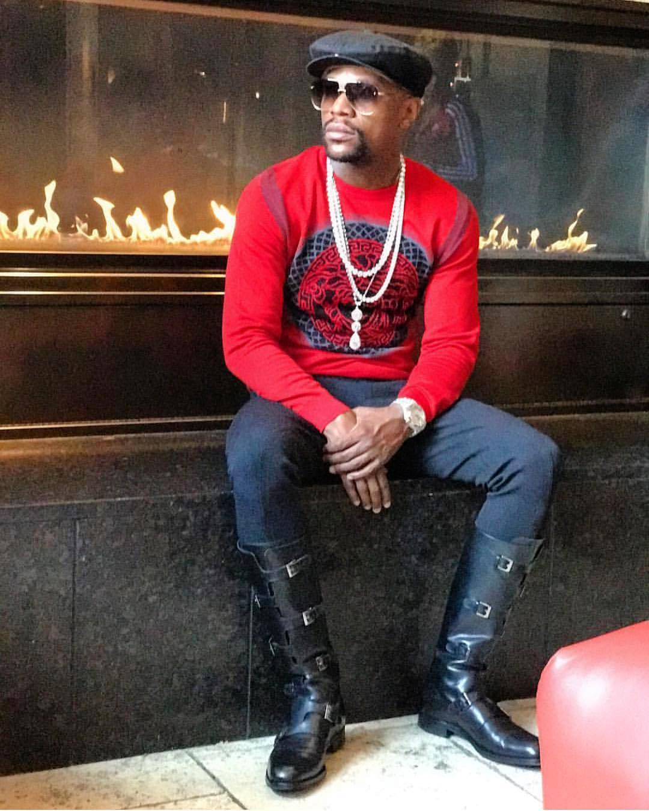

Formal Wear

The best dressed men are always prepared for formal occasions. This is usually but not limited to black-tie. Tuxedos are proper for events after 5pm. Any even prior would call for a light colored suite and tie.
Street Wear-Designer
Urban wear is a look born from the inner-city. The main difference between urban street wear and disigner street wear is the label and fit.